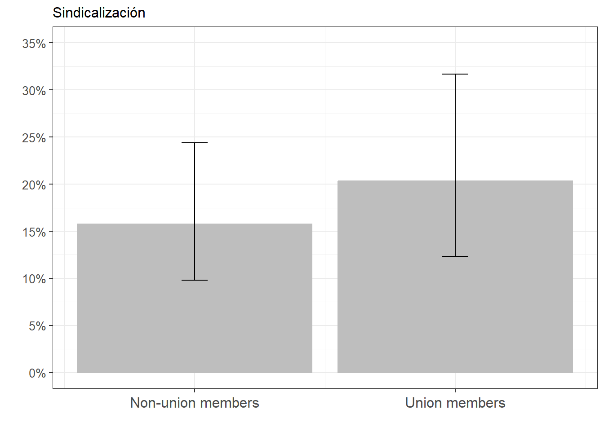
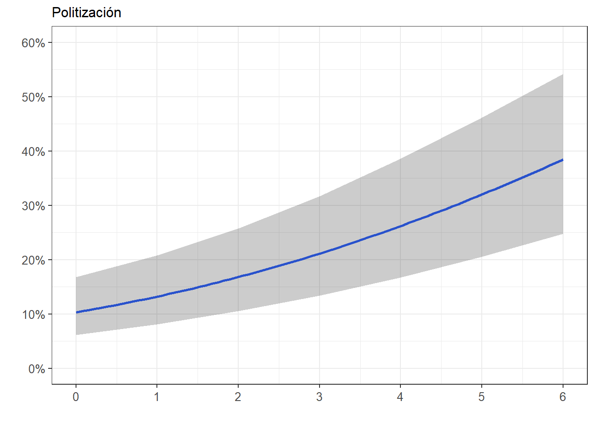

Código
pacman::p_load(tidyr,
dplyr,
sjPlot,
sjmisc,
psych,
texreg,
haven,
ggplot2,
lmtest,
DescTools)R para el análisis de datos
2 de junio de 2026
La Encuesta Mundial de Valores (EMV) o World Values Survey WVS es un proyecto global de investigación social que explora los valores y opiniones de la gente, cómo estos cambian con el tiempo, y su impacto social y político. Desde 1981 una red mundial de científicos sociales y politólogos llevan a cabo esta investigación, haciendo encuestas nacionales representativas en casi 100 países. La WVS es la única fuente de datos empíricos sobre actitudes y valores humanos que abarca a la mayoría de la población mundial (casi el 90%).
En el ejemplo de esta práctica, que utiliza solo casos para Chile entre 2005 y 2022, se intentará responder la pregunta ¿existe una relación entre la afiliación a sindicatos y la participación en marchas?
Debido a la naturaleza de la variable dependiente participación en marchas (si/no), el objetivo de esta práctica es estimar modelos de regresión logística binaria.
Unionized demonstr_dummy petition_dummy Wave
Min. :0.0000 Min. :0.0000 Min. :0.0000 Wave 5:373
1st Qu.:0.0000 1st Qu.:0.0000 1st Qu.:0.0000 Wave 6:516
Median :0.0000 Median :0.0000 Median :0.0000 Wave 7:568
Mean :0.1984 Mean :0.2073 Mean :0.1846
3rd Qu.:0.0000 3rd Qu.:0.0000 3rd Qu.:0.0000
Max. :1.0000 Max. :1.0000 Max. :1.0000
pol_pos pol_pos_left politicization civic_involvement
left :360 Min. :0.0000 Min. :0.00 Min. :0.0000
center :509 1st Qu.:0.0000 1st Qu.:1.00 1st Qu.:0.0000
right :215 Median :0.0000 Median :2.00 Median :0.0000
Not identified: 0 Mean :0.2471 Mean :1.95 Mean :0.6905
NA's :373 3rd Qu.:0.0000 3rd Qu.:3.00 3rd Qu.:1.0000
Max. :1.0000 Max. :6.00 Max. :3.0000
X003 age Female Educ private_sector
Min. :18.00 1:128 Min. :0.0000 1:123 Min. :0.0000
1st Qu.:31.00 2:341 1st Qu.:0.0000 2:924 1st Qu.:1.0000
Median :41.00 3:400 Median :0.0000 3:410 Median :1.0000
Mean :41.44 4:352 Mean :0.4084 Mean :0.8593
3rd Qu.:50.00 5:188 3rd Qu.:1.0000 3rd Qu.:1.0000
Max. :80.00 6: 48 Max. :1.0000 Max. :1.0000
gvt_resp tax_rich unempl_aid state_inc_eq
Min. : 1.000 Min. : 1.000 Min. : 1.000 Min. : 1.000
1st Qu.: 5.000 1st Qu.: 5.000 1st Qu.: 5.000 1st Qu.: 5.000
Median : 6.000 Median : 7.000 Median : 7.000 Median : 7.000
Mean : 6.457 Mean : 6.446 Mean : 7.103 Mean : 6.689
3rd Qu.: 9.000 3rd Qu.: 9.000 3rd Qu.:10.000 3rd Qu.: 9.000
Max. :10.000 Max. :10.000 Max. :10.000 Max. :10.000
NA's :16 NA's :87 NA's :62 NA's :439 vars n mean sd median trimmed mad min max range
Unionized 1 1457 0.20 0.40 0 0.12 0.00 0 1 1
demonstr_dummy 2 1457 0.21 0.41 0 0.13 0.00 0 1 1
petition_dummy 3 1457 0.18 0.39 0 0.11 0.00 0 1 1
Wave* 4 1457 2.13 0.79 2 2.17 1.48 1 3 2
pol_pos* 5 1084 1.87 0.72 2 1.83 1.48 1 3 2
pol_pos_left 6 1457 0.25 0.43 0 0.18 0.00 0 1 1
politicization 7 1457 1.95 1.61 2 1.81 1.48 0 6 6
civic_involvement 8 1457 0.69 0.98 0 0.49 0.00 0 3 3
X003 9 1457 41.44 12.25 41 41.13 13.34 18 80 62
age* 10 1457 3.19 1.27 3 3.18 1.48 1 6 5
Female 11 1457 0.41 0.49 0 0.39 0.00 0 1 1
Educ* 12 1457 2.20 0.57 2 2.23 0.00 1 3 2
private_sector 13 1457 0.86 0.35 1 0.95 0.00 0 1 1
gvt_resp 14 1441 6.46 2.58 6 6.61 2.97 1 10 9
tax_rich 15 1370 6.45 2.72 7 6.64 2.97 1 10 9
unempl_aid 16 1395 7.10 2.53 7 7.37 2.97 1 10 9
state_inc_eq 17 1018 6.69 2.60 7 6.90 2.97 1 10 9
skew kurtosis se
Unionized 1.51 0.28 0.01
demonstr_dummy 1.44 0.08 0.01
petition_dummy 1.62 0.64 0.01
Wave* -0.24 -1.37 0.02
pol_pos* 0.20 -1.04 0.02
pol_pos_left 1.17 -0.63 0.01
politicization 0.56 -0.43 0.04
civic_involvement 1.31 0.51 0.03
X003 0.21 -0.63 0.32
age* 0.15 -0.66 0.03
Female 0.37 -1.86 0.01
Educ* -0.02 -0.28 0.01
private_sector -2.06 2.26 0.01
gvt_resp -0.32 -0.71 0.07
tax_rich -0.34 -0.81 0.07
unempl_aid -0.62 -0.43 0.07
state_inc_eq -0.40 -0.61 0.08El punto de partida es transformación de los coeficientes 𝛽 en coeficientes logit:
Se conoce como “logit” a la transformación logarítmica de los odds (traducidos comúnmente como “chances”)
¿Qué son los odds? Una razón de probabilidades
Por lo tanto, para estimar probabilidades a través de una regresión logística hay que seguir estos pasos:
WVS_2005_2022_Chl <- WVS_2005_2022_Chl %>%
mutate(Unionized = labelled(.$Unionized,c("No"=0,"Sí"=1)),
demonstr_dummy = labelled(.$demonstr_dummy,c("No"=0,"Sí"=1)))
WVS_2005_2022_Chl <- as.data.frame(WVS_2005_2022_Chl) #para que la base quede como data frame (necesario para las figuras)
frq(WVS_2005_2022_Chl$Unionized)x <numeric>
# total N=1457 valid N=1457 mean=0.20 sd=0.40
Value | Label | N | Raw % | Valid % | Cum. %
-----------------------------------------------
0 | No | 1168 | 80.16 | 80.16 | 80.16
1 | Sí | 289 | 19.84 | 19.84 | 100.00
<NA> | <NA> | 0 | 0.00 | <NA> | <NA>x <integer>
# total N=1457 valid N=1457 mean=0.21 sd=0.41
Value | Label | N | Raw % | Valid % | Cum. %
-----------------------------------------------
0 | No | 1155 | 79.27 | 79.27 | 79.27
1 | Sí | 302 | 20.73 | 20.73 | 100.00
<NA> | <NA> | 0 | 0.00 | <NA> | <NA>Warning: `valueLables` needs to be a `list`-object.| demonstr_dummy | Unionized | Total | |
|---|---|---|---|
| No | Sí | ||
| No | 941 80.6 % |
214 74 % |
1155 79.3 % |
| Sí | 227 19.4 % |
75 26 % |
302 20.7 % |
| Total | 1168 100 % |
289 100 % |
1457 100 % |
| χ2=5.598 · df=1 · φ=0.064 · p=0.018 | |||
\[Odds_{participar} = \frac{0.207}{0.793} = 0.26\]
Las chances de participar en una marcha son de 0,26, respecto a las chances de no participar
En otras palabras: por cada 1 persona, hay sólo 0,26 personas que participan en marchas.
O más intuitivamente, por cada 100 personas, hay sólo 26 personas que participan
¿Cambian las chances de participar según se esté afiliado/a a un sindicato
\[Odds_{sindical} = \frac{0.26}{0.74} = 0.35\]
\[Odds_{no.sindical} = \frac{0.194}{0.806} = 0.24\]
¿Cómo se interpretan los odds?
Valores bajo 1 indican que las chances de que ocurra un evento son negativas
Valores iguales a 1 indican chances iguales
Valores sobre 1 indican chances positivas
Cálculo que permite reflejar asociación entre dos variables dicotómicas, a partir de una comparación entre chances
Siguiendo con el ejemplo anterior, ¿tienen los/as sindicalizados más chances de participar en marchas que quienes no están sindicalizados/as?
\[OR = \frac{P_{sindical}/(1-P_{sindical})}{P_{no.sindical}/(1-P_{no.sindical})}\]
\[OR = \frac{0.26/0.74}{0.194/0.806} = \frac{0.35}{0.24} = 1.46\]
Las chances de participar en marchas de los/as sindicalizados/as son 1,5 veces más que las de quienes no están sindicalizados/as
Implicancias:
Es una unidad de medida de la relación entre dos variables (VD: dicotómica), que en regresión logística se calcula a partir del logaritmo natural de los odds
Esta transformación logarítmica es la base de la estimación de parámetros en la regresión logística:
La mejor combinación lineal de predictores no se obtiene a través de MCO, sino a través del procedimiento de máxima verosimilitud
m0log <- glm(demonstr_dummy~ Unionized, data = WVS_2005_2022_Chl, family = "binomial"(link = "logit"))
m1log <- glm(demonstr_dummy~ Unionized + Wave, data = WVS_2005_2022_Chl, family = "binomial"(link = "logit"))
#nota: "logit" viene por defecto en la opción "binomial", por eso no es necesario
#incluirla explícitamente en el código (tal como lo hago en los modelos sgtes)
m2log <- glm(demonstr_dummy~ Unionized + Female + X003 + Educ + private_sector + Wave, data = WVS_2005_2022_Chl,family = "binomial")
m3log <- glm(demonstr_dummy~ Unionized + Female + X003 + Educ + private_sector + politicization + Wave, data = WVS_2005_2022_Chl,family = "binomial")| M1 (log odds) | M2 (log odds) | M3 (log odds) | |
|---|---|---|---|
| (Intercept) | -1.601*** | -1.023* | -1.379** |
| (0.140) | (0.424) | (0.437) | |
| Unionized | 0.418** | 0.390* | 0.312† |
| (0.155) | (0.157) | (0.161) | |
| WaveWave 6 | 0.470** | 0.498** | 0.496** |
| (0.168) | (0.171) | (0.174) | |
| WaveWave 7 | -0.031 | -0.102 | -0.121 |
| (0.174) | (0.181) | (0.184) | |
| Female | -0.020 | 0.100 | |
| (0.136) | (0.139) | ||
| X003 | -0.007 | -0.012* | |
| (0.006) | (0.006) | ||
| Educ2 | 0.042 | -0.053 | |
| (0.268) | (0.272) | ||
| Educ3 | 0.521† | 0.259 | |
| (0.283) | (0.289) | ||
| private_sector | -0.516** | -0.445* | |
| (0.175) | (0.180) | ||
| politicization | 0.282*** | ||
| (0.042) | |||
| AIC | 1475.887 | 1460.059 | 1415.850 |
| BIC | 1497.024 | 1507.616 | 1468.691 |
| Log Likelihood | -733.944 | -721.030 | -697.925 |
| Deviance | 1467.887 | 1442.059 | 1395.850 |
| Num. obs. | 1457 | 1457 | 1457 |
| ***p < 0.001; **p < 0.01; *p < 0.05; †p < 0.1 | |||
En el Modelo 1 (M1), el log-odds de participación en marchas para afiliados a sindicatos aumenta en 0.418 en comparación con los no sindicalizados (p<0.01). Este resultado mantiene su significación estadística en el Modelo 2 y baja su significación a p<0.1 en el Modelo 3, al controlar por las demás variables independientes.
En el Modelo 2, En comparación a los/as trabajadores/as del sector público (categoría de referencia), el log-odds de participación en marchas para los/as del sector privado disminuye en 0,52 (p < 0,01), manteniendo el resto de variables constantes.
En el Modelo 3, por cada unidad de aumento en la escala de politización, el log-odds de participación en marchas aumenta en 0,28 (p < 0,001), manteniendo el resto de las variables constantes.
A pesar de sus ventajas, los coeficientes logit son difíciles de interpretar:
Los coef. logit son el resultado de una transformación de la escala original
Ellos no muestran directamente probabilidades
Entonces: Volver a la escala original de odds ratio mediante la exponenciación de los coeficientes (la función exponencial es la inversa del logaritmo)
\[logit_x = log(odds)\]
\[e^{logit} = odds_x\]
\[e^{0.39} = odds_x = 1.477\]
Las chances (odds) de participar en marchas de los/as sindicalizados/as son 1,5 veces más que las de quienes no están sindicalizados/as, controlando por las otras variables incluidas en el modelo
(Intercept) Unionized WaveWave 6 WaveWave 7
0.2016888 1.5185264 1.5996549 0.9694021 | m1 (OR) | m2 (OR) | m3 (OR) | |
|---|---|---|---|
| (Intercept) | 0.202*** | 0.359* | 0.252** |
| (0.140) | (0.424) | (0.437) | |
| Unionized | 1.519** | 1.477* | 1.366† |
| (0.155) | (0.157) | (0.161) | |
| WaveWave 6 | 1.600** | 1.646** | 1.642** |
| (0.168) | (0.171) | (0.174) | |
| WaveWave 7 | 0.969 | 0.903 | 0.886 |
| (0.174) | (0.181) | (0.184) | |
| Female | 0.980 | 1.106 | |
| (0.136) | (0.139) | ||
| X003 | 0.993 | 0.988* | |
| (0.006) | (0.006) | ||
| Educ2 | 1.042 | 0.949 | |
| (0.268) | (0.272) | ||
| Educ3 | 1.684† | 1.296 | |
| (0.283) | (0.289) | ||
| private_sector | 0.597** | 0.641* | |
| (0.175) | (0.180) | ||
| politicization | 1.326*** | ||
| (0.042) | |||
| AIC | 1475.887 | 1460.059 | 1415.850 |
| BIC | 1497.024 | 1507.616 | 1468.691 |
| Log Likelihood | -733.944 | -721.030 | -697.925 |
| Deviance | 1467.887 | 1442.059 | 1395.850 |
| Num. obs. | 1457 | 1457 | 1457 |
| ***p < 0.001; **p < 0.01; *p < 0.05; †p < 0.1 | |||
Sin embargo, los coeficientes de un modelo de reg. logística (log-odds u odds-ratios) no son comparables con los coeficientes de otro modelo
| m0 (log odds) | |
|---|---|
| (Intercept) | -1.422*** |
| (0.074) | |
| Unionized | 0.374* |
| (0.153) | |
| AIC | 1485.340 |
| BIC | 1495.908 |
| Log Likelihood | -740.670 |
| Deviance | 1481.340 |
| Num. obs. | 1457 |
| ***p < 0.001; **p < 0.01; *p < 0.05; †p < 0.1 | |
A partir de este modelo se pueden predecir log-odds y, más importante aún, probabilidades para personas con distintos atributos controlados en el modelo (ej., sindicalizadas o no)
\[logit(prob.marcha) = 𝛼+ 𝛽_1X_1 \]
\[logit(prob.marcha)_{sindical} = -1.422 + (0.374 * Unionized=1) = -1.048 \]
\[logit(prob.marcha)_{no.sindical} = -1.422 + (0.374 * Unionized=0) = -1.422 \]
Este “puntaje predicho” (log-odds) no tiene interpretación, por lo que hay que pasarlo a Odds
\[Odds_x = e^{𝛼+𝛽_jX_j}\]
\[Odds_{sindicalizados} = e^{-1.048} = 0.35\]
\[Odds_{no.sindicalizados} = e^{-1.422} = 0.24\]
Finalmente, habiendo calculado los odds para cada tipo de persona se pueden calcular sus probabilidades predichas
\[p = \frac{e^{𝛼+𝛽_jX_j}}{1+e^{𝛼+𝛽_jX_j}} = \frac{odds_{xj}}{1+odds_{xj}}\]
\[p_{sindicalizados} = \frac{0.35}{1+0.35} = \frac{0.35}{1.35} = 0.26\]
\[p_{no.sindicalizados} = \frac{0.24}{1+0.24} = \frac{0.24}{1.24} = 0.19\]
La probabilidad de que un/a sindicalizado participe en marchas es del 26%, mientras que la probabilidad de que alguien que no esté sindicalizado/a es del 19%
Paquete ggeffects de R: últil para estimar probabilidades predichas a partir de modelos de regresión logísticas
Combinado con ggplot2, se pueden generar gráficos que muestran de modo más intuitivo la relación entre variables
Gráfico de probabilidades predichas para sindicalizados/as y no sindicalizados/as
FigSind_1_Prob <- ggeffects::ggpredict(m3log, terms = c("Unionized")) %>%
ggplot(aes(x=x, y=predicted)) +
geom_bar(stat="identity", color="grey", fill="grey")+
geom_errorbar(aes(ymin = conf.low, ymax = conf.high), width=.1) +
labs(title="Sindicalización", x = "", y = "") +
theme_bw() +
theme(plot.title = element_text(size = 12),
axis.text.x = element_text(angle = 0, vjust = 0.5, size = 12),
axis.text.y = element_text(vjust = 0.5, size = 10)) +
scale_x_continuous(name = "",
breaks = c(0,1),
labels = c("Non-union members", "Union members")) +
scale_y_continuous(limits = c(0,0.35),
breaks = seq(0,0.35, by = 0.05),
labels = scales::percent_format(accuracy = 1L))
FigSind_1_Prob
Gráfico de probabilidades predichas para variable politización
FigPolit_1_Prob<- ggeffects::ggpredict(m3log, terms="politicization") %>%
ggplot(mapping=aes(x = x, y=predicted)) +
labs(title="Politización", x = "", y = "")+
theme_bw() +
geom_smooth()+
geom_ribbon(aes(ymin = conf.low, ymax = conf.high), alpha = .2, fill = "black") +
theme(plot.title = element_text(size = 12),
axis.text.x = element_text(angle = 0, vjust = 0.5, size = 10),
axis.text.y = element_text(vjust = 0.5, size = 10))+
scale_x_continuous(breaks = seq(0,6, by = 1))+
scale_y_continuous(limits = c(0,0.6), breaks=seq(0,0.6, by = 0.1),
labels = scales::percent_format(accuracy = 1L))
FigPolit_1_Prob`geom_smooth()` using method = 'loess' and formula = 'y ~ x'
Analysis of Deviance Table
Model 1: demonstr_dummy ~ Unionized + Wave
Model 2: demonstr_dummy ~ Unionized + Female + X003 + Educ + private_sector +
Wave
Resid. Df Resid. Dev Df Deviance Pr(>Chi)
1 1453 1467.9
2 1448 1442.1 5 25.828 9.635e-05 ***
---
Signif. codes: 0 '***' 0.001 '**' 0.01 '*' 0.05 '.' 0.1 ' ' 1Analysis of Deviance Table
Model 1: demonstr_dummy ~ Unionized + Female + X003 + Educ + private_sector +
Wave
Model 2: demonstr_dummy ~ Unionized + Female + X003 + Educ + private_sector +
politicization + Wave
Resid. Df Resid. Dev Df Deviance Pr(>Chi)
1 1448 1442.1
2 1447 1395.8 1 46.21 1.063e-11 ***
---
Signif. codes: 0 '***' 0.001 '**' 0.01 '*' 0.05 '.' 0.1 ' ' 1Likelihood ratio test
Model 1: demonstr_dummy ~ Unionized + Wave
Model 2: demonstr_dummy ~ Unionized + Female + X003 + Educ + private_sector +
Wave
#Df LogLik Df Chisq Pr(>Chisq)
1 4 -733.94
2 9 -721.03 5 25.828 9.635e-05 ***
---
Signif. codes: 0 '***' 0.001 '**' 0.01 '*' 0.05 '.' 0.1 ' ' 1Likelihood ratio test
Model 1: demonstr_dummy ~ Unionized + Female + X003 + Educ + private_sector +
Wave
Model 2: demonstr_dummy ~ Unionized + Female + X003 + Educ + private_sector +
politicization + Wave
#Df LogLik Df Chisq Pr(>Chisq)
1 9 -721.03
2 10 -697.92 1 46.21 1.063e-11 ***
---
Signif. codes: 0 '***' 0.001 '**' 0.01 '*' 0.05 '.' 0.1 ' ' 1| m1 (log odds) | m2 (log odds) | m3 (log odds) | |
|---|---|---|---|
| (Intercept) | -1.601*** | -1.023* | -1.379** |
| (0.140) | (0.424) | (0.437) | |
| Unionized | 0.418** | 0.390* | 0.312† |
| (0.155) | (0.157) | (0.161) | |
| WaveWave 6 | 0.470** | 0.498** | 0.496** |
| (0.168) | (0.171) | (0.174) | |
| WaveWave 7 | -0.031 | -0.102 | -0.121 |
| (0.174) | (0.181) | (0.184) | |
| Female | -0.020 | 0.100 | |
| (0.136) | (0.139) | ||
| X003 | -0.007 | -0.012* | |
| (0.006) | (0.006) | ||
| Educ2 | 0.042 | -0.053 | |
| (0.268) | (0.272) | ||
| Educ3 | 0.521† | 0.259 | |
| (0.283) | (0.289) | ||
| private_sector | -0.516** | -0.445* | |
| (0.175) | (0.180) | ||
| politicization | 0.282*** | ||
| (0.042) | |||
| Pseudo R2 | 0.013 | 0.030 | 0.061 |
| AIC | 1475.887 | 1460.059 | 1415.850 |
| BIC | 1497.024 | 1507.616 | 1468.691 |
| Log Likelihood | -733.944 | -721.030 | -697.925 |
| Deviance | 1467.887 | 1442.059 | 1395.850 |
| Num. obs. | 1457 | 1457 | 1457 |
| ***p < 0.001; **p < 0.01; *p < 0.05; †p < 0.1 | |||
---
title: "Práctico 09. Regresión logística"
subtitle: "R para el análisis de datos"
date: "2026-06-02"
lang: es
output:
number_sections: true
---
# Regresión logística
La Encuesta Mundial de Valores (EMV) o World Values Survey [WVS](https://www.worldvaluessurvey.org/wvs.jsp) es un proyecto global de investigación social que explora los valores y opiniones de la gente, cómo estos cambian con el tiempo, y su impacto social y político. Desde 1981 una red mundial de científicos sociales y politólogos llevan a cabo esta investigación, haciendo encuestas nacionales representativas en casi 100 países. La WVS es la única fuente de datos empíricos sobre actitudes y valores humanos que abarca a la mayoría de la población mundial (casi el 90%).
## Objetivo
En el ejemplo de esta práctica, que utiliza solo casos para Chile entre 2005 y 2022, se intentará responder la pregunta ¿existe una relación entre la afiliación a sindicatos y la participación en marchas?
Debido a la naturaleza de la variable dependiente participación en marchas (si/no), el objetivo de esta práctica es estimar modelos de regresión logística binaria.
# Librerías
```{r}
pacman::p_load(tidyr,
dplyr,
sjPlot,
sjmisc,
psych,
texreg,
haven,
ggplot2,
lmtest,
DescTools)
```
# Datos
```{r}
#Cargamos la base de datos desde internet
load(url("https://github.com/Kevin-carrasco/metod1-MCS/raw/main/files/data/WVS_2005_2022_Chl.RData"))
```
## Explorar datos
```{r}
summary(WVS_2005_2022_Chl) #con comando de paquete haven
describe(WVS_2005_2022_Chl) #con comando de paquete psych
```
# Regresiones logísticas
El punto de partida es transformación de los coeficientes 𝛽 en coeficientes logit:
* Se conoce como “logit” a la transformación logarítmica de los odds (traducidos comúnmente como “chances”)
* ¿Qué son los odds? Una razón de probabilidades
* Por lo tanto, para estimar probabilidades a través de una regresión logística hay que seguir estos pasos:
1. Estimar los odds o razón de probabilidades
2. Estimar odds ratios (razones entre odds)
3. Aplicar una transformación logarítmica a esos odds ratios para obtener coeficientes logit
4. Calcular las probabilidades
## Tabla de contingencia bivariado: sindicalización / participación en marchas
```{r}
WVS_2005_2022_Chl <- WVS_2005_2022_Chl %>%
mutate(Unionized = labelled(.$Unionized,c("No"=0,"Sí"=1)),
demonstr_dummy = labelled(.$demonstr_dummy,c("No"=0,"Sí"=1)))
WVS_2005_2022_Chl <- as.data.frame(WVS_2005_2022_Chl) #para que la base quede como data frame (necesario para las figuras)
frq(WVS_2005_2022_Chl$Unionized)
frq(WVS_2005_2022_Chl$demonstr_dummy)
sjPlot::tab_xtab(var.col = WVS_2005_2022_Chl$Unionized,
var.row = WVS_2005_2022_Chl$demonstr_dummy,
title = "Participación en marchas según afiliación sindical",
show.col.prc = TRUE,
value.labels = TRUE,
encoding = "UTF-8")
```
### Odds
$$Odds_{participar} = \frac{0.207}{0.793} = 0.26$$
Las chances de participar en una marcha son de 0,26, respecto a las chances de no participar
* En otras palabras: por cada 1 persona, hay sólo 0,26 personas que participan en marchas.
* O más intuitivamente, por cada 100 personas, hay sólo 26 personas que participan
¿Cambian las chances de participar según se esté afiliado/a a un sindicato
$$Odds_{sindical} = \frac{0.26}{0.74} = 0.35$$
$$Odds_{no.sindical} = \frac{0.194}{0.806} = 0.24$$
¿Cómo se interpretan los odds?
* Valores bajo 1 indican que las chances de que ocurra un evento son negativas
* Valores iguales a 1 indican chances iguales
* Valores sobre 1 indican chances positivas
### Odds ratios (razones de chances)
* Cálculo que permite reflejar asociación entre dos variables dicotómicas, a partir de una comparación entre chances
* Siguiendo con el ejemplo anterior, ¿tienen los/as sindicalizados más chances de participar en marchas que quienes no están sindicalizados/as?
$$OR = \frac{P_{sindical}/(1-P_{sindical})}{P_{no.sindical}/(1-P_{no.sindical})}$$
$$OR = \frac{0.26/0.74}{0.194/0.806} = \frac{0.35}{0.24} = 1.46$$
Las chances de participar en marchas de los/as sindicalizados/as son 1,5 veces más que las de quienes no están sindicalizados/as
* Implicancias:
1. El odds ratio o razones de chances es útil porque nos permite expresar en un número la relación entre dos variables categóricas
2. En las regresiones logísticas, el odds ratio es la primera manera de aproximarnos a relación entre variables
3. Sin embargo, falta un paso más necesario para construir modelos de regresión logística
## Logit
* Es una unidad de medida de la relación entre dos variables (VD: dicotómica), que en regresión logística se calcula a partir del logaritmo natural de los odds
* Esta transformación logarítmica es la base de la estimación de parámetros en la regresión logística:
La mejor combinación lineal de predictores no se obtiene a través de MCO, sino a través del procedimiento de máxima verosimilitud
* A diferencia de los odds ratio, los coeficientes logit tienen valores que van de –\infty a +\infty
## Modelo de regresión logística
```{r}
m0log <- glm(demonstr_dummy~ Unionized, data = WVS_2005_2022_Chl, family = "binomial"(link = "logit"))
m1log <- glm(demonstr_dummy~ Unionized + Wave, data = WVS_2005_2022_Chl, family = "binomial"(link = "logit"))
#nota: "logit" viene por defecto en la opción "binomial", por eso no es necesario
#incluirla explícitamente en el código (tal como lo hago en los modelos sgtes)
m2log <- glm(demonstr_dummy~ Unionized + Female + X003 + Educ + private_sector + Wave, data = WVS_2005_2022_Chl,family = "binomial")
m3log <- glm(demonstr_dummy~ Unionized + Female + X003 + Educ + private_sector + politicization + Wave, data = WVS_2005_2022_Chl,family = "binomial")
```
```{r results='asis'}
htmlreg(list(m1log,m2log,m3log),
custom.model.names = c("M1 (log odds)","M2 (log odds)","M3 (log odds)"),
digits = 3,
stars = c(0.001, 0.01, 0.05, 0.1),symbol = "†")
```
En el Modelo 1 (M1), el log-odds de participación en marchas para afiliados a sindicatos aumenta en 0.418 en comparación con los no sindicalizados (p<0.01). Este resultado mantiene su significación estadística en el Modelo 2 y baja su significación a p<0.1 en el Modelo 3, al controlar por las demás variables independientes.
En el Modelo 2, En comparación a los/as trabajadores/as del sector público (categoría de referencia), el log-odds de participación en marchas para los/as del sector privado disminuye en 0,52 (p < 0,01), manteniendo el resto de variables constantes.
En el Modelo 3, por cada unidad de aumento en la escala de politización, el log-odds de participación en marchas aumenta en 0,28 (p < 0,001), manteniendo el resto de las variables constantes.
### Problemas de interpretación
A pesar de sus ventajas, los coeficientes logit son difíciles de interpretar:
* Los coef. logit son el resultado de una transformación de la escala original
* Ellos no muestran directamente probabilidades
* Entonces: Volver a la escala original de **odds ratio** mediante la **exponenciación de los coeficientes** (la función exponencial es la inversa del logaritmo)
$$logit_x = log(odds)$$
$$e^{logit} = odds_x$$
$$e^{0.39} = odds_x = 1.477$$
Las chances (odds) de participar en marchas de los/as sindicalizados/as son 1,5 veces más que las de quienes no están sindicalizados/as, controlando por las otras variables incluidas en el modelo
## Estimación de odds ratios
```{r}
exp(coef(m1log)) #comando básico
### Cálculo de OR para cada modelo
m0log_OR <- exp(coef(m0log))
m1log_OR <- exp(coef(m1log))
m2log_OR <- exp(coef(m2log))
m3log_OR <- exp(coef(m3log))
```
```{r results='asis'}
##Odds ratios en tabla de texreg
htmlreg(list(m1log,m2log,m3log),
override.coef = list(m1log_OR,m2log_OR,m3log_OR), # Sobreescribir coeficientes
custom.model.names = c("m1 (OR)","m2 (OR)","m3 (OR)"),
digits = 3,
stars = c(0.001, 0.01, 0.05, 0.1),symbol = "†")
#Nota: errores estándares en esta tabla NO tienen sentido (no están calculados a partir de OR, sino de log odds)
#Es mejor no reportarlos si solo se van a presentar odds ratios
```
Sin embargo, los coeficientes de un modelo de reg. logística (log-odds u odds-ratios) no son comparables con los coeficientes de otro modelo
## Cálculo de probabilidades predichas
```{r results='asis'}
# Tabla básica: sólo sindicalizacion como vble independ
htmlreg(m0log,
custom.model.names = c("m0 (log odds)"),
digits = 3,
stars = c(0.001, 0.01, 0.05, 0.1),symbol = "†")
```
A partir de este modelo se pueden predecir log-odds y, más importante aún, probabilidades para personas con distintos atributos controlados en el modelo (ej., sindicalizadas o no)
$$logit(prob.marcha) = 𝛼+ 𝛽_1X_1 $$
$$logit(prob.marcha)_{sindical} = -1.422 + (0.374 * Unionized=1) = -1.048 $$
$$logit(prob.marcha)_{no.sindical} = -1.422 + (0.374 * Unionized=0) = -1.422 $$
Este “puntaje predicho” (log-odds) no tiene interpretación, por lo que hay que pasarlo a Odds
$$Odds_x = e^{𝛼+𝛽_jX_j}$$
$$Odds_{sindicalizados} = e^{-1.048} = 0.35$$
$$Odds_{no.sindicalizados} = e^{-1.422} = 0.24$$
Finalmente, habiendo calculado los odds para cada tipo de persona se pueden calcular sus probabilidades predichas
$$p = \frac{e^{𝛼+𝛽_jX_j}}{1+e^{𝛼+𝛽_jX_j}} = \frac{odds_{xj}}{1+odds_{xj}}$$
$$p_{sindicalizados} = \frac{0.35}{1+0.35} = \frac{0.35}{1.35} = 0.26$$
$$p_{no.sindicalizados} = \frac{0.24}{1+0.24} = \frac{0.24}{1.24} = 0.19$$
La probabilidad de que un/a sindicalizado participe en marchas es del 26%, mientras que la probabilidad de que alguien que no esté sindicalizado/a es del 19%
## Cálculo de probabilidades predichas en R
* Paquete ggeffects de R: últil para estimar probabilidades predichas a partir de modelos de regresión logísticas
* Combinado con ggplot2, se pueden generar gráficos que muestran de modo más intuitivo la relación entre variables
Gráfico de probabilidades predichas para sindicalizados/as y no sindicalizados/as
```{r}
FigSind_1_Prob <- ggeffects::ggpredict(m3log, terms = c("Unionized")) %>%
ggplot(aes(x=x, y=predicted)) +
geom_bar(stat="identity", color="grey", fill="grey")+
geom_errorbar(aes(ymin = conf.low, ymax = conf.high), width=.1) +
labs(title="Sindicalización", x = "", y = "") +
theme_bw() +
theme(plot.title = element_text(size = 12),
axis.text.x = element_text(angle = 0, vjust = 0.5, size = 12),
axis.text.y = element_text(vjust = 0.5, size = 10)) +
scale_x_continuous(name = "",
breaks = c(0,1),
labels = c("Non-union members", "Union members")) +
scale_y_continuous(limits = c(0,0.35),
breaks = seq(0,0.35, by = 0.05),
labels = scales::percent_format(accuracy = 1L))
FigSind_1_Prob
```
Gráfico de probabilidades predichas para variable politización
```{r}
FigPolit_1_Prob<- ggeffects::ggpredict(m3log, terms="politicization") %>%
ggplot(mapping=aes(x = x, y=predicted)) +
labs(title="Politización", x = "", y = "")+
theme_bw() +
geom_smooth()+
geom_ribbon(aes(ymin = conf.low, ymax = conf.high), alpha = .2, fill = "black") +
theme(plot.title = element_text(size = 12),
axis.text.x = element_text(angle = 0, vjust = 0.5, size = 10),
axis.text.y = element_text(vjust = 0.5, size = 10))+
scale_x_continuous(breaks = seq(0,6, by = 1))+
scale_y_continuous(limits = c(0,0.6), breaks=seq(0,0.6, by = 0.1),
labels = scales::percent_format(accuracy = 1L))
FigPolit_1_Prob
```
# Bondad de ajuste
```{r}
anova(m1log, m2log, test = "Chisq")
```
```{r}
anova(m2log, m3log, test = "Chisq")
```
```{r}
lrtest(m1log, m2log) #likelihood ratio test / Prueba de razón de verosimilitud (comparación m1-m2)
```
```{r}
lrtest(m2log, m3log) #likelihood ratio test / Prueba de razón de verosimilitud (comparación m2-m3)
```
## Pseudo R2 (MCFadden)
```{r}
m1log_R2<-DescTools::PseudoR2(m1log)
m2log_R2<-DescTools::PseudoR2(m2log)
m3log_R2<-DescTools::PseudoR2(m3log)
```
```{r results='asis'}
#Misma tabla, en log odds, con Pseudo R2
htmlreg(list(m1log,m2log,m3log),
custom.model.names = c("m1 (log odds)","m2 (log odds)","m3 (log odds)"),
custom.gof.rows=list("Pseudo R2" = c(m1log_R2, m2log_R2,m3log_R2)),
digits = 3,
stars = c(0.001, 0.01, 0.05, 0.1),symbol = "†")
```